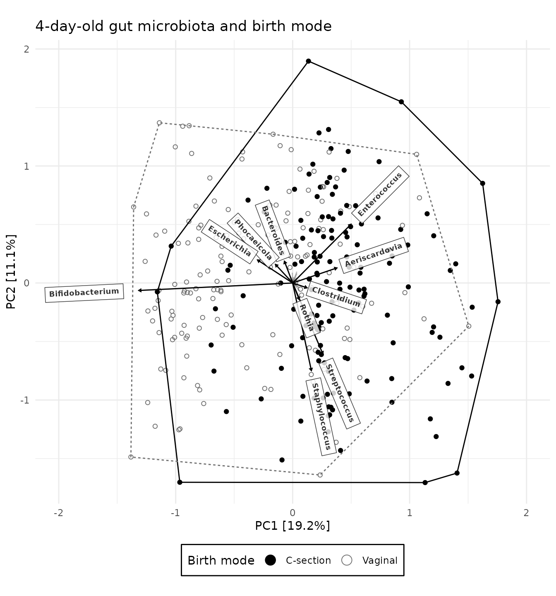
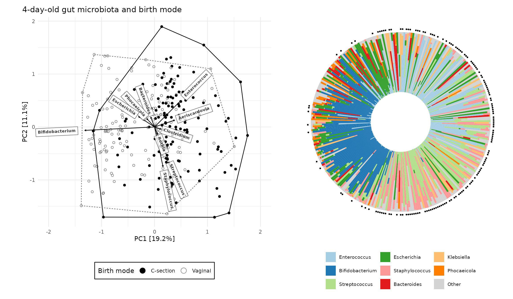

Introduction
This article will demonstrate some of the data processing steps, statistical analyses, and visualisations that can be performed with the microViz package. It will also provide some tips for how to use microViz with your own data, and point you to other articles for more details.
set.seed(1) # for reproducible stochastic processes
library(phyloseq)
library(ggplot2)
library(patchwork) # for combining multiple plots
library(microViz)
#> microViz version 0.11.0 - Copyright (C) 2023 David Barnett
#> ! Website: https://david-barnett.github.io/microViz
#> ✔ Useful? For citation details, run: `citation("microViz")`
#> ✖ Silence? `suppressPackageStartupMessages(library(microViz))`The data used in this article are derived from faecal samples obtained from infants and mothers participating in a large birth cohort study.
shao19
#> phyloseq-class experiment-level object
#> otu_table() OTU Table: [ 819 taxa and 1644 samples ]
#> sample_data() Sample Data: [ 1644 samples by 11 sample variables ]
#> tax_table() Taxonomy Table: [ 819 taxa by 6 taxonomic ranks ]
#> phy_tree() Phylogenetic Tree: [ 819 tips and 818 internal nodes ]
?shao19 # for more details on the datasetNote: These human gut microbiota data were generated from shotgun metagenomic sequencing, but microViz can be (and has been) used with microbiota data from various other sources, including 16S and ITS marker gene amplicon sequencing techniques, as well as HITChip profiling. Environmental and in vitro microbiota datasets are all also welcome in microViz, not just human gut bugs.
If you can put your data in a phyloseq object, then you can use microViz with it. If you need guidance on how to create a phyloseq object from your own data: see this article for resource links.
Checking your data
You can check the basic characteristics of your phyloseq dataset using standard phyloseq functions. microViz also provides a few helper functions.
sample_names(shao19) %>% head()
#> [1] "B01042_mo" "B01042_ba_10" "B01042_ba_7" "B01089_mo" "B01089_ba_4"
#> [6] "B01089_ba_7"Note: These taxa already have informative unique names, but if your
taxa_names are just numbers or sequences, look at the
tax_rename() function for one way to replace them with more
readable/informative unique names.
taxa_names(shao19) %>% head()
#> [1] "Escherichia coli" "Bacteroides caccae"
#> [3] "Bacteroides stercoris" "Ruminococcus bromii"
#> [5] "[Eubacterium] rectale" "Bifidobacterium adolescentis"
sample_variables(shao19)
#> [1] "subject_id" "family_id"
#> [3] "sex" "family_role"
#> [5] "age" "infant_age"
#> [7] "birth_weight" "birth_mode"
#> [9] "c_section_type" "antibiotics_current_use"
#> [11] "number_reads"
samdat_tbl(shao19) # retrieve sample_data as a tibble
#> # A tibble: 1,644 × 12
#> .sample_name subject_id family_id sex family_role age infant_age
#> <chr> <chr> <chr> <chr> <chr> <int> <int>
#> 1 B01042_mo B01042_mo 193 male mother 32 NA
#> 2 B01042_ba_10 B01042_ba 193 male child 0 10
#> 3 B01042_ba_7 B01042_ba 193 male child 0 7
#> 4 B01089_mo B01089_mo 194 female mother 38 NA
#> 5 B01089_ba_4 B01089_ba 194 female child 0 4
#> 6 B01089_ba_7 B01089_ba 194 female child 0 7
#> 7 B01089_ba_21 B01089_ba 194 female child 0 21
#> 8 B01128_ba_7 B01128_ba 195 male child 0 7
#> 9 B01128_mo B01128_mo 195 male mother 32 NA
#> 10 B01190_ba_21 B01190_ba 196 male child 0 21
#> # ℹ 1,634 more rows
#> # ℹ 5 more variables: birth_weight <dbl>, birth_mode <chr>,
#> # c_section_type <chr>, antibiotics_current_use <chr>, number_reads <int>
otu_get(shao19, taxa = 1:3, samples = 1:5) # look at a tiny part of the otu_table
#> OTU Table: [3 taxa and 5 samples]
#> taxa are columns
#> Escherichia coli Bacteroides caccae Bacteroides stercoris
#> B01042_mo 5787899 2237960 1225392
#> B01042_ba_10 130453 0 0
#> B01042_ba_7 0 0 0
#> B01089_mo 7371972 595532 746435
#> B01089_ba_4 0 0 0
rank_names(shao19)
#> [1] "phylum" "class" "order" "family" "genus" "species"
tax_table(shao19) %>% head(3)
#> Taxonomy Table: [3 taxa by 6 taxonomic ranks]:
#> phylum class order
#> Escherichia coli "Proteobacteria" "Gammaproteobacteria" "Enterobacterales"
#> Bacteroides caccae "Bacteroidetes" "Bacteroidia" "Bacteroidales"
#> Bacteroides stercoris "Bacteroidetes" "Bacteroidia" "Bacteroidales"
#> family genus
#> Escherichia coli "Enterobacteriaceae" "Escherichia"
#> Bacteroides caccae "Bacteroidaceae" "Bacteroides"
#> Bacteroides stercoris "Bacteroidaceae" "Bacteroides"
#> species
#> Escherichia coli "Escherichia coli"
#> Bacteroides caccae "Bacteroides caccae"
#> Bacteroides stercoris "Bacteroides stercoris"The function phyloseq_validate() can be used to check
for common problems with phyloseq objects, so I suggest running it on
your data before trying to start your analyses.
shao19 <- phyloseq_validate(shao19) # no messages or warnings means no detected problemsFixing your tax_table
One common problem you will encounter either when you run
phyloseq_validate or shortly after, are problematic entries in the
taxonomy table. For example if many or all of the “species” rank entries
are "s__" or "unknown_species" or
NA etc. The same species name should not appear under
multiple genera, so these duplicated or uninformative entries need to be
replaced before you can proceed.
See this article for a discussion of
how to fix these problems using tax_fix() and maybe
tax_fix_interactive() and/or tax_filter(). As
a last resort you could also try deleting entirely unwanted taxa by
using tax_select().
Modify your sample_data
Later in these example analyses we will need modified version of the
sample variables stored in the sample_data slot of the phyloseq object.
The ps_mutate() function provides an easy way to modify
your phyloseq sample_data (ps is short for phyloseq). You can use
ps_mutate() in a similar way to
dplyr::mutate(). If you are unfamiliar with the
dplyr package, I highly recommend you look at the dplyr website, to learn about
some incredibly handy tools for data transformation, and because several
of the microViz data transformation functions are used in a similar
way.
Subset your samples
For the first part of this example analyses we will look at only one
sample per infant, from the timepoint when they were 4 days old. The
microViz function ps_filter() makes this easy. You use
ps_filter() in a similar way to
dplyr::filter(), to filter samples using variables in the
sample_data.
We will also use ps_dedupe() to “deduplicate” samples,
to ensure that we definitely only keep one sample per family (e.g. if
any infant has more than one sample at age 4, or if there are
twins).
Note 1: Observe that
==is used here, not=Note 2: By default,
ps_filter()also removes taxa that no longer appear in the filtered dataset (zero total counts). This is different tophyloseq::subset_samples()andphyloseq::prune_samples().
shao4d <- shao19 %>%
ps_filter(family_role == "child", infant_age == 4, .keep_all_taxa = TRUE) %>%
ps_dedupe(vars = "family_id")
#> 306 groups: with 1 samples each
#> Dropped 0 samples.
shao4d
#> phyloseq-class experiment-level object
#> otu_table() OTU Table: [ 353 taxa and 306 samples ]
#> sample_data() Sample Data: [ 306 samples by 13 sample variables ]
#> tax_table() Taxonomy Table: [ 353 taxa by 6 taxonomic ranks ]
#> phy_tree() Phylogenetic Tree: [ 353 tips and 352 internal nodes ]Composition barplot
Let us look at the compositions of infant samples from age of 4 days,
grouping the samples by birth mode. The comp_barplot()
function make generating an attractive and informative ggplot2 bar chart
easy: by default it automatically sorts the samples by microbiota
similarity, sorts the taxa by overall abundance, and applies a sensible
categorical colour palette with many colours. Taxa not assigned a colour
are merged into one light grey bar by default, but can be shown
un-merged, as in this example.
shao4d %>%
comp_barplot("genus", n_taxa = 15, merge_other = FALSE, label = NULL) +
facet_wrap(vars(birth_mode), scales = "free") + # scales = "free" is IMPORTANT!
coord_flip() +
ggtitle(
"Neonatal gut microbiota composition at 4 days",
"Substanstial differences are visible in profiles of high abundance taxa"
) +
theme(axis.ticks.y = element_blank(), strip.text = element_text(face = "bold"))As practice, try modifying this barplot by changing some of the
comp_barplot() arguments, try for example: using a
different dissimilarity measure to sort the samples, displaying a
different taxonomic rank, colouring fewer taxa, and/or removing the bar
outlines.
Check out the article on composition bar plots for more guidance and ideas.
Ordination plot
microViz provides an easy workflow for creating ordination plots including PCA, PCoA and NMDS using ggplot2, including plotting taxa loadings arrows for PCA. Preparing for an ordination plot requires a few steps.
-
tax_filter()to filter out rare taxa - this is an optional step, relevant for some ordination methods -
tax_agg()to aggregate taxa at your chosen taxonomic rank, e.g. genus -
tax_transform()to transform the abundance counts (important for PCA, but inappropriate for many dissimilarity-based ordinations) -
dist_calc()to calculate a sample-sample distance or dissimilarity matrix (only needed for dissimilarity-based methods, e.g. PCoA or NMDS) -
ord_calc()to perform the ordination analysis -
ord_plot()to plot any two dimensions of your ordinated data
shao4d_psX <- shao4d %>%
# keep only taxa belonging to genera that have over 100 counts in at least 5% of samples
tax_filter(min_prevalence = 0.05, undetected = 100, tax_level = "genus") %>%
# aggregate counts at genus-level & transform with robust CLR transformation
tax_transform(trans = "rclr", rank = "genus") %>%
# no distances are needed for PCA: so skip dist_calc and go straight to ord_calc
ord_calc(method = "PCA")
#> Proportional min_prevalence given: 0.05 --> min 16/306 samples.
shao4d_psX
#> psExtra object - a phyloseq object with extra slots:
#>
#> phyloseq-class experiment-level object
#> otu_table() OTU Table: [ 29 taxa and 306 samples ]
#> sample_data() Sample Data: [ 306 samples by 13 sample variables ]
#> tax_table() Taxonomy Table: [ 29 taxa by 5 taxonomic ranks ]
#>
#> otu_get(counts = TRUE) [ 29 taxa and 306 samples ]
#>
#> psExtra info:
#> tax_agg = "genus" tax_trans = "rclr"
#>
#> ordination of class: rda cca
#> rda(formula = OTU ~ 1, data = data)
#> Ordination info:
#> method = 'PCA' Note: microViz will record your choices in steps 2
through 5, by adding additional information to the phyloseq object,
which is now called a “psExtra”. By
default the psExtra object will also store: the original counts OTU
table (before any transformation); the distance matrix; and ordination
object. To retrieve each of these, use
ps_get(counts = TRUE), dist_get(), or
ord_get().
PCA_plot <- shao4d_psX %>%
ord_plot(
colour = "birth_mode", shape = "birth_mode",
plot_taxa = 10:1,
tax_vec_length = 0.3,
tax_lab_style = tax_lab_style(
type = "label", max_angle = 90, aspect_ratio = 1,
size = 2.5, alpha = 0.8, fontface = "bold", # style the labels
label.r = unit(0, "mm") # square corners of labels - see ?geom_label
)
) +
coord_fixed(ratio = 1, clip = "off", xlim = c(-2, 2))
# match coord_fixed() ratio to tax_lab_style() aspect_ratio for correct text angles
PCA_plot
As this PCA plot is a ggplot object, you can adjust the aesthetic
scales (colour, shape, size etc.) and theme elements in the usual
ggplot ways. However, styling the taxon loadings arrows and labels
can only be done within the ord_plot() call itself.
PCA_plot_custom <- PCA_plot +
# add a convex hull around the points for each group, to aid the eye
stat_chull(
mapping = aes(colour = birth_mode, linetype = birth_mode),
linewidth = 0.5, alpha = 0.5, show.legend = FALSE
) +
scale_shape_manual(
name = "Birth mode",
values = c("circle", "circle open"), labels = c("C-section", "Vaginal")
) +
# set a custom colour scale and customise the legend order and appearance
scale_color_manual(
name = "Birth mode",
values = c("black", "grey45"), labels = c("C-section", "Vaginal"),
guide = guide_legend(override.aes = list(size = 4))
) +
# add a title and delete the automatic caption
labs(title = "4-day-old gut microbiota and birth mode", caption = NULL) +
# put the legend at the bottom and draw a border around it
theme(legend.position = "bottom", legend.background = element_rect())
PCA_plot_custom
There are many choices to make during ordination analysis and
visualisation. Try customising the ordination plot itself: change the
arguments in ord_plot() (e.g. map the shape aesthetic to
the infant sex, and plot the 1st & 4th principal components); or use
ggplot functions to change the appearance of the plot (e.g. pick a new
theme or modify the current theme to remove the the panel.grid).
Try out some different choices for the ordination analysis itself,
e.g. make an NMDS plot using Bray-Curtis dissimilarities calculating
using class-level data. If that sounds like too much typing, you might
like to skip ahead to the section on creating and exploring Interactive ordination plots
with ord_explore().
Note 1: Most of the distance calculation and ordination analysis methods are implemented or collected within the brilliant vegan package developed by the statisticians Jari Oksanen and Gavin Simpson, amongst others. microViz uses vegan functions internally, and provides a ggplot2 approach to visualising the ordination results.
Note 2: Constrained and conditioned ordination
analyses, e.g. RDA, are also possible. If you understand the rationale
behind these analyses, feel free to try out setting the constraints
and/or conditions arguments in ord_calc(). If these
concepts are new to you, the “GUSTA
ME” GUide to STatistical Analysis in Microbial
Ecology website is one good resource for learning more
about useful methods like redundancy analysis and partial redundancy analysis. It
is easy to produce quite misleading plots through the misuse of constrained analyses, so
be careful! üòá
Ordination-sorted circular barplot
For additional insight into your ordination plot results, microViz provides a novel approach to pairing a circular microbiota composition bar chart, or “iris” plot, with an ordination plot. The samples on the circular bar chart are ordered using the rotational order of the samples on the ordination plot axes!
irisPlot <- shao4d_psX %>%
ord_plot_iris(
axes = c(1, 2), tax_level = "genus", n_taxa = 8,
anno_binary = "Csection", # add an annotation ring indicating C-section birth
anno_binary_style = list(size = 0.5, colour = "black"), # from ord plot colour scale
ord_plot = "none" # we'll reuse the customised PCA plot from earlier
) +
guides(fill = guide_legend(ncol = 3)) +
theme(legend.position = "bottom")
patchwork::wrap_plots(PCA_plot_custom, irisPlot, nrow = 1, widths = c(5, 4))
Interactive ordination plots
Want to create an ordination plot and/or explore your dataset, but don’t fancy much typing?
Starting with just a validated phyloseq object you can run
ord_explore() to interactively create and explore
ordination plots.
ord_explore(shao19)
As shown in the video clip above, your default web browser will open a new window (or tab), and display an interactive shiny application. Select options from the menu to build an interactive ordination plot, and click on/lasso select samples to view their compositions. Click the “Options” button to change the ordination settings. Click on the “Code” button to generate code that you can copy-paste into your script/notebook to reproduce the ordination plot.
Composition heatmap
Heatmaps can be a useful way to display taxonomic composition of your
samples, in addition to or instead of bar charts. You can transform the
taxa using tax_transform(), various kinds of log
transformations (including clr or rclr) can be helpful to illustrate
relative abundance patterns for both low abundance and high abundance
taxa on the same plot. This is an advantage of heatmaps over
comp_barplot(), where patterns involving low relative
abundance taxa can be hard to spot.
shao4d %>%
tax_transform(trans = "rclr", rank = "genus") %>%
tax_filter(min_prevalence = 0.1, use_counts = TRUE) %>%
comp_heatmap(
colors = heat_palette(sym = TRUE), grid_col = NA,
sample_side = "bottom", name = "Robust\nCLR",
sample_anno = sampleAnnotation(
"Birth mode" = anno_sample("birth_mode3"),
col = list("Birth mode" = c(
"CS Elective" = "black", "CS Emergency" = "orange", "Vaginal" = "lightgrey"
))
)
)
#> Proportional min_prevalence given: 0.1 --> min 31/306 samples.See the microViz heatmaps article for more guidance on making composition heatmaps.
See the ComplexHeatmap online book for more information on controlling the display of Complex Heatmaps.
Statistical testing
microViz can also help you perform and visualise the results of statistical tests. A couple of simple examples follow.
PERMANOVA
One common method for assessing whether a variable has is associated with an overall difference in microbiota composition in your dataset is permutational multivariate analysis of variance (PERMANOVA). For a great introduction to PERMANOVA, see this resource by Marti J Anderson.
vegan provides the vegan::adonis2() function for
performing PERMANOVA analyses. microViz provides a convenience function,
dist_permanova() which allows you to use the distance
matrix stored in a psExtra object to perform PERMANOVA with adonis2, and
store the result in the psExtra too.
shao4d_perm <- shao4d %>%
tax_transform("identity", rank = "genus") %>%
dist_calc("aitchison") %>%
dist_permanova(
variables = c("birth_mode", "sex", "number_reads"),
n_perms = 99, # you should use more permutations in your real analyses!
n_processes = 1
)
#> Dropping samples with missings: 15
#> 2023-07-31 10:51:16.678858 - Starting PERMANOVA with 99 perms with 1 processes
#> 2023-07-31 10:51:17.09314 - Finished PERMANOVA
shao4d_perm %>% perm_get()
#> Permutation test for adonis under reduced model
#> Marginal effects of terms
#> Permutation: free
#> Number of permutations: 99
#>
#> vegan::adonis2(formula = formula, data = metadata, permutations = n_perms, by = by, parallel = parall)
#> Df SumOfSqs R2 F Pr(>F)
#> birth_mode 1 10462 0.09055 29.3778 0.01 **
#> sex 1 402 0.00348 1.1296 0.31
#> number_reads 1 1117 0.00967 3.1364 0.01 **
#> Residual 287 102209 0.88462
#> Total 290 115540 1.00000
#> ---
#> Signif. codes: 0 '***' 0.001 '**' 0.01 '*' 0.05 '.' 0.1 ' ' 1Differential abundance testing
microViz provides functions for applying various statistical modelling methods to microbiome data, see the statistical modelling article for a longer discussion.
microViz does not introduce any novel statistical method for
differential abundance testing, but allows you to apply various methods,
including those from other packages, on multiple taxa across multiple
taxonomic ranks of aggregation, using the taxatree_models()
function. If you want to apply statistical tests to many or all taxa in
a single rank, you could use the tax_model() function.
microViz offers a somewhat novel general approach to visualising the
results (effect estimates and significance) of many tests across
multiple ranks, “Taxonomic Association Trees”, a heatmap-style
visualisation with results arranged in a tree structure, following the
hierarchy of taxonomic rank relationships in the taxonomy table:
taxatree_plots().
Taxonomic association tree plots
Starting with a simple approach borrowed from MaAsLin2, let’s perform simple linear regression using log2-transformed relative abundances (as the dependent variable). We will test for differences in the average relative abundance of each taxon between infants born by C-section and vaginally delivered infants.
# First transform and filter the taxa, ready for statistical modelling #
shao4d_prev10 <- shao4d %>%
# prepend the 1st letter of the rank to each tax_table entry, to ensure all are unique
tax_prepend_ranks() %>%
tax_transform(trans = "compositional", rank = "genus") %>%
# for various statistical, biological, and practical reasons, let's strictly filter taxa
tax_filter(min_prevalence = 0.1, use_counts = TRUE)
#> Proportional min_prevalence given: 0.1 --> min 31/306 samples.
shao4d_prev10
#> psExtra object - a phyloseq object with extra slots:
#>
#> phyloseq-class experiment-level object
#> otu_table() OTU Table: [ 18 taxa and 306 samples ]
#> sample_data() Sample Data: [ 306 samples by 13 sample variables ]
#> tax_table() Taxonomy Table: [ 18 taxa by 5 taxonomic ranks ]
#>
#> otu_get(counts = TRUE) [ 18 taxa and 306 samples ]
#>
#> psExtra info:
#> tax_agg = "genus" tax_trans = "compositional"
shao4d_treeStats <- shao4d_prev10 %>%
# run all the statistical models
taxatree_models(
ranks = c("phylum", "class", "order", "family", "genus"),
trans = "log2", trans_args = list(add = "halfmin"),
variables = "Csection", type = lm # modelling function
) %>%
# extract stats from the models
taxatree_models2stats(.keep_models = TRUE) %>%
# adjust the p values for multiple testing, within each rank
taxatree_stats_p_adjust(method = "fdr", grouping = "rank")
#> 2023-07-31 10:51:17.630655 - modelling at rank: phylum
#> 2023-07-31 10:51:17.863391 - modelling at rank: class
#> 2023-07-31 10:51:18.189435 - modelling at rank: order
#> 2023-07-31 10:51:18.616774 - modelling at rank: family
#> 2023-07-31 10:51:19.10824 - modelling at rank: genus
shao4d_treeStats
#> psExtra object - a phyloseq object with extra slots:
#>
#> phyloseq-class experiment-level object
#> otu_table() OTU Table: [ 18 taxa and 306 samples ]
#> sample_data() Sample Data: [ 306 samples by 13 sample variables ]
#> tax_table() Taxonomy Table: [ 18 taxa by 5 taxonomic ranks ]
#>
#> otu_get(counts = TRUE) [ 18 taxa and 306 samples ]
#>
#> psExtra info:
#> tax_agg = "genus" tax_trans = "compositional"
#>
#> taxatree_models list:
#> Ranks: phylum/class/order/family/genus
#> taxatree_stats dataframe:
#> 57 taxa at 5 ranks: phylum, class, order, family, genus
#> 1 terms: CsectionThe models are stored in a nested list. A list of ranks containing lists of taxa.
taxatree_models_get(shao4d_treeStats)$genus$`g: Phocaeicola`
#>
#> Call:
#> `g: Phocaeicola` ~ Csection
#>
#> Coefficients:
#> (Intercept) Csection
#> -12.400 -7.057The stats extracted from each model (with the help of
broom::tidy()) are stored in a tibble (data frame).
taxatree_stats_get(shao4d_treeStats)
#> # A tibble: 57 × 9
#> # Groups: rank [5]
#> term taxon rank formula estimate std.error statistic p.value
#> <fct> <chr> <fct> <chr> <dbl> <dbl> <dbl> <dbl>
#> 1 Csection p: Proteobacter… phyl… `p: Pr… -2.58 0.767 -3.36 8.68e- 4
#> 2 Csection p: Bacteroidetes phyl… `p: Ba… -8.73 0.698 -12.5 3.13e-29
#> 3 Csection p: Actinobacter… phyl… `p: Ac… -4.67 0.679 -6.88 3.38e-11
#> 4 Csection p: Firmicutes phyl… `p: Fi… 2.73 0.327 8.36 2.22e-15
#> 5 Csection c: Gammaproteob… class `c: Ga… -2.67 0.768 -3.48 5.72e- 4
#> 6 Csection c: Bacteroidia class `c: Ba… -8.73 0.698 -12.5 3.13e-29
#> 7 Csection c: Actinomycetia class `c: Ac… -4.47 0.684 -6.53 2.68e-10
#> 8 Csection c: Bacilli class `c: Ba… 2.56 0.338 7.56 4.93e-13
#> 9 Csection c: Coriobacteri… class `c: Co… -2.52 0.451 -5.59 5.12e- 8
#> 10 Csection c: Clostridia class `c: Cl… 1.58 0.599 2.64 8.64e- 3
#> # ℹ 47 more rows
#> # ℹ 1 more variable: p.adj.fdr.rank <dbl>Let’s make a labelled tree plot:
treePlotsSimple <- shao4d_treeStats %>%
# specify which taxa will get labeled (adds a "label" variable to the stats tibble)
taxatree_label(p.adj.fdr.rank < 0.01, rank %in% c("phylum", "genus")) %>%
# make the plots (1 per predictor variable, so a list of 1 in this example)
taxatree_plots(
sig_stat = "p.adj.fdr.rank", sig_threshold = 0.01,
drop_ranks = FALSE # drop_ranks = TRUE has a bug in version 0.10.4 :(
)
treePlotsSimple %>% str(max.level = 1) # just a list with a single ggplot inside
#> List of 1
#> $ Csection:List of 9
#> ..- attr(*, "class")= chr [1:3] "ggraph" "gg" "ggplot"
treePlotsSimple$Csection %>%
# add labels to the plot, only for the taxa indicated earlier
taxatree_plot_labels(
taxon_renamer = function(x) gsub(x = x, pattern = "[pg]: ", replacement = "")
) +
coord_fixed(expand = TRUE, clip = "off") + # allow scale expansion
scale_x_continuous(expand = expansion(mult = 0.2)) # make space for labels
Check out the statistical modelling article for many more tree examples, including covariate-adjusted regression.
Longitudinal data?
microViz doesn’t yet contain much functionality designed for longitudinal data (more specifically, multiple timepoints of microbiome data from the same individual/site/experimental run/etc.), but there are already a few ways you can use microViz to help visualise your repeated samples.
Let us create a dataset containing 10 infants with numerous samples across multiple ages.
# some dplyr wrangling to get the names of the infants we want!
repeatedInfants <- shao19 %>%
samdat_tbl() %>%
dplyr::filter(family_role == "child") %>%
dplyr::group_by(subject_id) %>%
dplyr::summarise(nSamples = dplyr::n()) %>%
dplyr::arrange(desc(nSamples)) %>%
dplyr::pull(subject_id) %>%
head(10)
shaoRepeated <- shao19 %>%
ps_filter(subject_id %in% repeatedInfants) %>%
ps_arrange(subject_id, infant_age) %>% # put the samples in age order, per infant
ps_mutate(age_factor = factor(infant_age)) # useful for plotting
samdat_tbl(shaoRepeated)
#> # A tibble: 48 × 15
#> .sample_name subject_id family_id sex family_role age infant_age
#> <chr> <chr> <chr> <chr> <chr> <int> <int>
#> 1 A00502_ba_4 A00502_ba 27 female child 0 4
#> 2 A00502_ba_7 A00502_ba 27 female child 0 7
#> 3 A00502_ba_21 A00502_ba 27 female child 0 21
#> 4 A00502_ba_226 A00502_ba 27 female child 0 226
#> 5 A01166_ba_4 A01166_ba 47 female child 0 4
#> 6 A01166_ba_7 A01166_ba 47 female child 0 7
#> 7 A01166_ba_21 A01166_ba 47 female child 0 21
#> 8 A01166_ba_420 A01166_ba 47 female child 0 420
#> 9 A01173_ba_4 A01173_ba 48 female child 0 4
#> 10 A01173_ba_7 A01173_ba 48 female child 0 7
#> # ℹ 38 more rows
#> # ℹ 8 more variables: birth_weight <dbl>, birth_mode <chr>,
#> # c_section_type <chr>, antibiotics_current_use <chr>, number_reads <int>,
#> # Csection <dbl>, birth_mode3 <chr>, age_factor <fct>Try ord_explore() on this dataset (or any dataset with
repeated samples arranged in time order).
You can try: colour samples by subject_id, map the size of the points to infant_age, and try selecting “paths” and infants from the “add” menu, to follow infants trajectories over time.
ord_explore(shaoRepeated)Use the “Code” button to get example code, and you’ll be able to recreate something fun like this.
shaoRepeated %>%
tax_transform(rank = "genus", trans = "identity") %>%
dist_calc(dist = "bray") %>%
ord_calc(method = "auto") %>%
ord_plot(colour = "subject_id", alpha = 0.5, size = "infant_age") %>%
add_paths(
id_var = "subject_id",
id_values = c("A01166_ba", "SID523133_ba", "A01173_ba", "SID512120_ba", "SID519128_ba"),
mapping = aes(colour = subject_id)
) +
scale_color_viridis_d(option = "turbo")To learn how to sort samples by time, or in some other manual order, such as in the example below, check out the section on sorting samples by time in the composition barplots article.

Session info
devtools::session_info()
#> ─ Session info ───────────────────────────────────────────────────────────────
#> setting value
#> version R version 4.3.1 (2023-06-16)
#> os Ubuntu 22.04.2 LTS
#> system x86_64, linux-gnu
#> ui X11
#> language en
#> collate C.UTF-8
#> ctype C.UTF-8
#> tz UTC
#> date 2023-07-31
#> pandoc 2.19.2 @ /usr/bin/ (via rmarkdown)
#>
#> ─ Packages ───────────────────────────────────────────────────────────────────
#> package * version date (UTC) lib source
#> ade4 1.7-22 2023-02-06 [1] RSPM
#> ape 5.7-1 2023-03-13 [1] RSPM
#> backports 1.4.1 2021-12-13 [1] RSPM
#> Biobase 2.60.0 2023-04-25 [1] Bioconductor
#> BiocGenerics 0.46.0 2023-04-25 [1] Bioconductor
#> biomformat 1.28.0 2023-04-25 [1] Bioconductor
#> Biostrings 2.68.1 2023-05-16 [1] Bioconductor
#> bitops 1.0-7 2021-04-24 [1] RSPM
#> broom 1.0.5 2023-06-09 [1] RSPM
#> bslib 0.5.0 2023-06-09 [1] RSPM
#> ca 0.71.1 2020-01-24 [1] RSPM
#> cachem 1.0.8 2023-05-01 [1] RSPM
#> callr 3.7.3 2022-11-02 [1] RSPM
#> circlize 0.4.15 2022-05-10 [1] RSPM
#> cli 3.6.1 2023-03-23 [1] RSPM
#> clue 0.3-64 2023-01-31 [1] RSPM
#> cluster 2.1.4 2022-08-22 [3] CRAN (R 4.3.1)
#> codetools 0.2-19 2023-02-01 [3] CRAN (R 4.3.1)
#> colorspace 2.1-0 2023-01-23 [1] RSPM
#> commonmark 1.9.0 2023-03-17 [1] RSPM
#> ComplexHeatmap 2.16.0 2023-04-25 [1] Bioconductor
#> corncob 0.3.1 2022-12-05 [1] RSPM
#> crayon 1.5.2 2022-09-29 [1] RSPM
#> data.table 1.14.8 2023-02-17 [1] RSPM
#> desc 1.4.2 2022-09-08 [1] RSPM
#> devtools 2.4.5 2022-10-11 [1] RSPM
#> digest 0.6.33 2023-07-07 [1] RSPM
#> doParallel 1.0.17 2022-02-07 [1] RSPM
#> dplyr 1.1.2 2023-04-20 [1] RSPM
#> ellipsis 0.3.2 2021-04-29 [1] RSPM
#> evaluate 0.21 2023-05-05 [1] RSPM
#> fansi 1.0.4 2023-01-22 [1] RSPM
#> farver 2.1.1 2022-07-06 [1] RSPM
#> fastmap 1.1.1 2023-02-24 [1] RSPM
#> foreach 1.5.2 2022-02-02 [1] RSPM
#> fs 1.6.3 2023-07-20 [1] RSPM
#> generics 0.1.3 2022-07-05 [1] RSPM
#> GenomeInfoDb 1.36.1 2023-06-21 [1] Bioconductor
#> GenomeInfoDbData 1.2.10 2023-06-16 [1] Bioconductor
#> GetoptLong 1.0.5 2020-12-15 [1] RSPM
#> ggforce 0.4.1 2022-10-04 [1] RSPM
#> ggplot2 * 3.4.2 2023-04-03 [1] RSPM
#> ggraph 2.1.0 2022-10-09 [1] RSPM
#> ggrepel 0.9.3 2023-02-03 [1] RSPM
#> ggtext 0.1.2 2022-09-16 [1] RSPM
#> GlobalOptions 0.1.2 2020-06-10 [1] RSPM
#> glue 1.6.2 2022-02-24 [1] RSPM
#> graphlayouts 1.0.0 2023-05-01 [1] RSPM
#> gridExtra 2.3 2017-09-09 [1] RSPM
#> gridtext 0.1.5 2022-09-16 [1] RSPM
#> gtable 0.3.3 2023-03-21 [1] RSPM
#> highr 0.10 2022-12-22 [1] RSPM
#> htmltools 0.5.5 2023-03-23 [1] RSPM
#> htmlwidgets 1.6.2 2023-03-17 [1] RSPM
#> httpuv 1.6.11 2023-05-11 [1] RSPM
#> igraph 1.5.0.1 2023-07-23 [1] RSPM
#> IRanges 2.34.1 2023-06-22 [1] Bioconductor
#> iterators 1.0.14 2022-02-05 [1] RSPM
#> jquerylib 0.1.4 2021-04-26 [1] RSPM
#> jsonlite 1.8.7 2023-06-29 [1] RSPM
#> knitr 1.43 2023-05-25 [1] RSPM
#> labeling 0.4.2 2020-10-20 [1] RSPM
#> later 1.3.1 2023-05-02 [1] RSPM
#> lattice 0.21-8 2023-04-05 [3] CRAN (R 4.3.1)
#> lifecycle 1.0.3 2022-10-07 [1] RSPM
#> magrittr 2.0.3 2022-03-30 [1] RSPM
#> markdown 1.7 2023-05-16 [1] RSPM
#> MASS 7.3-60 2023-05-04 [3] CRAN (R 4.3.1)
#> Matrix 1.5-4.1 2023-05-18 [3] CRAN (R 4.3.1)
#> matrixStats 1.0.0 2023-06-02 [1] RSPM
#> memoise 2.0.1 2021-11-26 [1] RSPM
#> mgcv 1.8-42 2023-03-02 [3] CRAN (R 4.3.1)
#> microbiome 1.22.0 2023-04-25 [1] Bioconductor
#> microViz * 0.11.0 2023-07-31 [1] local
#> mime 0.12 2021-09-28 [1] RSPM
#> miniUI 0.1.1.1 2018-05-18 [1] RSPM
#> multtest 2.56.0 2023-04-25 [1] Bioconductor
#> munsell 0.5.0 2018-06-12 [1] RSPM
#> nlme 3.1-162 2023-01-31 [3] CRAN (R 4.3.1)
#> patchwork * 1.1.2 2022-08-19 [1] RSPM
#> permute 0.9-7 2022-01-27 [1] RSPM
#> phyloseq * 1.44.0 2023-04-25 [1] Bioconductor
#> pillar 1.9.0 2023-03-22 [1] RSPM
#> pkgbuild 1.4.2 2023-06-26 [1] RSPM
#> pkgconfig 2.0.3 2019-09-22 [1] RSPM
#> pkgdown 2.0.7 2022-12-14 [1] RSPM
#> pkgload 1.3.2.1 2023-07-08 [1] RSPM
#> plyr 1.8.8 2022-11-11 [1] RSPM
#> png 0.1-8 2022-11-29 [1] RSPM
#> polyclip 1.10-4 2022-10-20 [1] RSPM
#> prettyunits 1.1.1 2020-01-24 [1] RSPM
#> processx 3.8.2 2023-06-30 [1] RSPM
#> profvis 0.3.8 2023-05-02 [1] RSPM
#> promises 1.2.0.1 2021-02-11 [1] RSPM
#> ps 1.7.5 2023-04-18 [1] RSPM
#> purrr 1.0.1 2023-01-10 [1] RSPM
#> R6 2.5.1 2021-08-19 [1] RSPM
#> ragg 1.2.5 2023-01-12 [1] RSPM
#> RColorBrewer 1.1-3 2022-04-03 [1] RSPM
#> Rcpp 1.0.11 2023-07-06 [1] RSPM
#> RCurl 1.98-1.12 2023-03-27 [1] RSPM
#> registry 0.5-1 2019-03-05 [1] RSPM
#> remotes 2.4.2.1 2023-07-18 [1] RSPM
#> reshape2 1.4.4 2020-04-09 [1] RSPM
#> rhdf5 2.44.0 2023-04-25 [1] Bioconductor
#> rhdf5filters 1.12.1 2023-04-30 [1] Bioconductor
#> Rhdf5lib 1.22.0 2023-04-25 [1] Bioconductor
#> rjson 0.2.21 2022-01-09 [1] RSPM
#> rlang 1.1.1 2023-04-28 [1] RSPM
#> rmarkdown 2.23 2023-07-01 [1] RSPM
#> rprojroot 2.0.3 2022-04-02 [1] RSPM
#> Rtsne 0.16 2022-04-17 [1] RSPM
#> S4Vectors 0.38.1 2023-05-02 [1] Bioconductor
#> sass 0.4.7 2023-07-15 [1] RSPM
#> scales 1.2.1 2022-08-20 [1] RSPM
#> seriation 1.5.1 2023-07-20 [1] RSPM
#> sessioninfo 1.2.2 2021-12-06 [1] RSPM
#> shape 1.4.6 2021-05-19 [1] RSPM
#> shiny 1.7.4.1 2023-07-06 [1] RSPM
#> stringi 1.7.12 2023-01-11 [1] RSPM
#> stringr 1.5.0 2022-12-02 [1] RSPM
#> survival 3.5-5 2023-03-12 [3] CRAN (R 4.3.1)
#> systemfonts 1.0.4 2022-02-11 [1] RSPM
#> textshaping 0.3.6 2021-10-13 [1] RSPM
#> tibble 3.2.1 2023-03-20 [1] RSPM
#> tidygraph 1.2.3 2023-02-01 [1] RSPM
#> tidyr 1.3.0 2023-01-24 [1] RSPM
#> tidyselect 1.2.0 2022-10-10 [1] RSPM
#> TSP 1.2-4 2023-04-04 [1] RSPM
#> tweenr 2.0.2 2022-09-06 [1] RSPM
#> urlchecker 1.0.1 2021-11-30 [1] RSPM
#> usethis 2.2.2 2023-07-06 [1] RSPM
#> utf8 1.2.3 2023-01-31 [1] RSPM
#> vctrs 0.6.3 2023-06-14 [1] RSPM
#> vegan 2.6-4 2022-10-11 [1] RSPM
#> viridis 0.6.4 2023-07-22 [1] RSPM
#> viridisLite 0.4.2 2023-05-02 [1] RSPM
#> withr 2.5.0 2022-03-03 [1] RSPM
#> xfun 0.39 2023-04-20 [1] RSPM
#> xml2 1.3.5 2023-07-06 [1] RSPM
#> xtable 1.8-4 2019-04-21 [1] RSPM
#> XVector 0.40.0 2023-04-25 [1] Bioconductor
#> yaml 2.3.7 2023-01-23 [1] RSPM
#> zlibbioc 1.46.0 2023-04-25 [1] Bioconductor
#>
#> [1] /home/runner/work/_temp/Library
#> [2] /opt/R/4.3.1/lib/R/site-library
#> [3] /opt/R/4.3.1/lib/R/library
#>
#> ──────────────────────────────────────────────────────────────────────────────